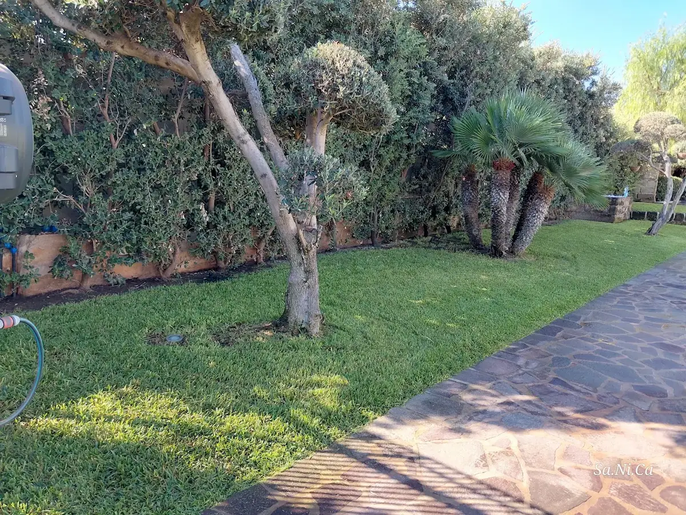
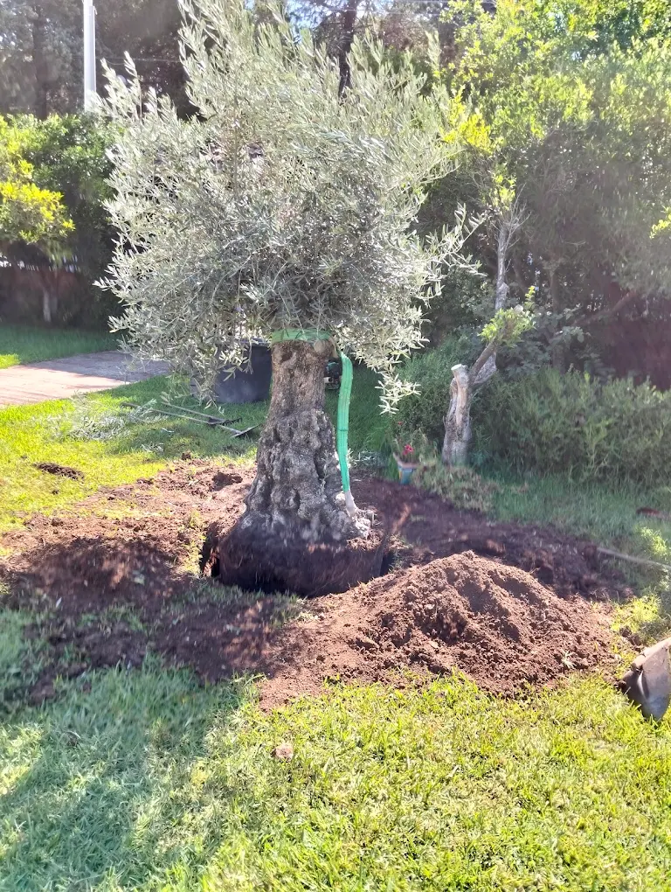
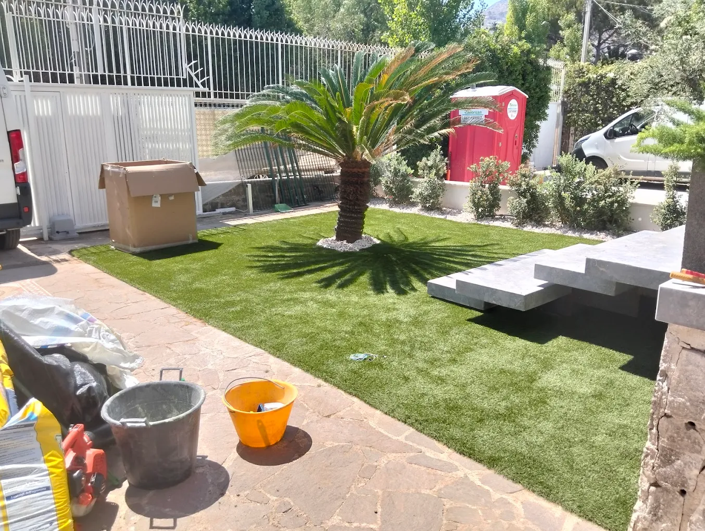
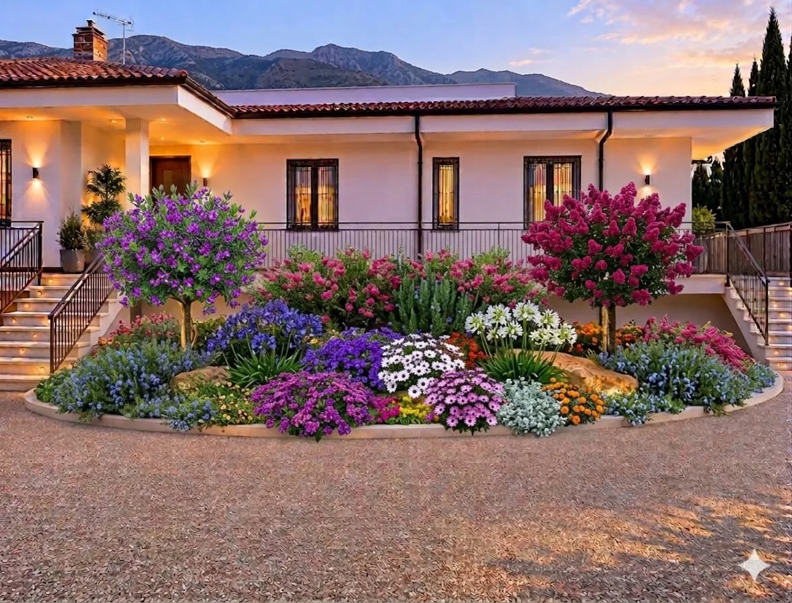

Fotografie, dettagli e progetti: il verde raccontato attraverso il lavoro reale.
Una raccolta di immagini dei lavori disponibili per il progetto. Nella versione definitiva le fotografie verranno sostituite con gli originali ad alta risoluzione forniti dall'azienda e accompagnate, dove possibile, dai dettagli dei singoli interventi.



Ogni progetto potrà diventare una scheda dedicata con fotografie, tipologia di intervento, servizi utilizzati e, quando disponibili, località e descrizione del lavoro.
Raccontaci cosa hai in mente e parliamo del tuo spazio verde.